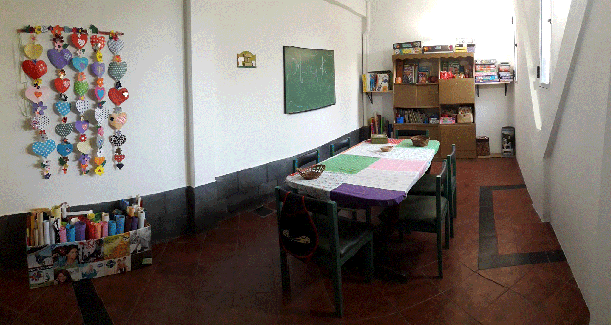

NUESTRA INSTITUCIÓN
El Centro de día se desarrolla en diferentes salas y espacios de la institución, específicamente acondicionados para las diversas actividades, que son planificadas y aplicadas por personal idóneo en las diferentes disciplinas inherentes a la salud y/o a la expresión artística de las personas. Nuestros equipos terapéuticos basan su éxito en tener objetivos claros, un programa definido e individual de intervención para cada persona y su familia.
Asistencia
Brindar una asistencia integral y operativa especializada en diagnóstico y trabajo ocupacional/terapéutico en técnicas actuales con fundamentos científicos.
Inclusión
Incluir a la familia como eje fundamental del trabajo ocupacional y terapéutico.
Bienestar
Formar grupos terapéuticos entre pares que faciliten la interacción y produzcan un aumento del bienestar emocional, de conductas comunicativas y destrezas cognitivas.
Intercambio
Brindarles a los padres la posibilidad de adquirir conocimientos teóricos para comprender mejor a sus hijos, para relacionarse con otros padres e integrarse con otras instituciones: Sociedad de fomento, bibliotecas, etc. Para mejorar la calidad de vida
Galería de imágenes